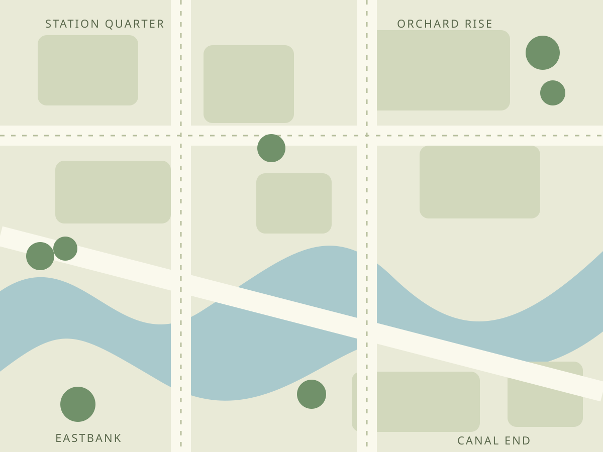

THE COMMON SOIL NEIGHBOURHOOD
Find your
patch of possibility.
Four imaginary garden projects, each with a different way to take part.
4 project concepts
Illustrative places. Not real addresses or verified facilities.

SCHEMATIC MAP / PLACES ARE FICTIONAL
Explore the projects.
No garden concepts match. Try another word or choose All gardens.